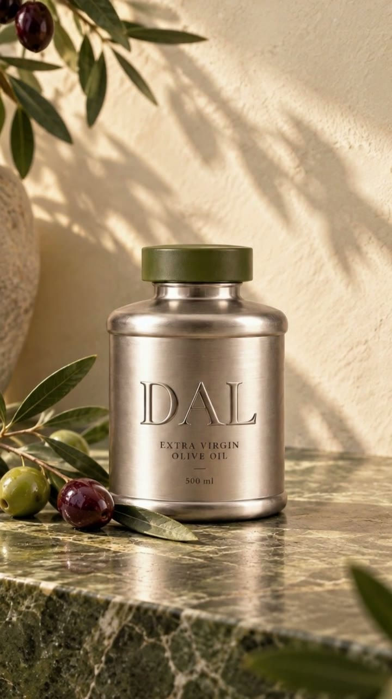

Konsept marka / AI film / 16 sn
DAL
Kökünden sofrana.
Fikir
Zeytinlikten sofraya uzanan kısa bir hikâye. Aynı karakter, sıcak gün ışığı ve metal ambalaj, doğayla ürün arasında bağ kuruyor.
Çalışmanın kapsamı
Sahne tasarımı, AI destekli görsel ve hareket üretimi, kurgu.
Konsept marka çalışması · Ticari müşteri işi değildir.
Böyle bir proje konuşalım ↗
Yaratıcı kararlar